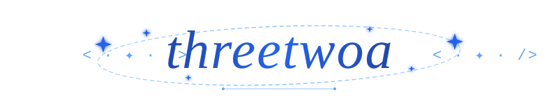

Software engineering student learning by building, testing, and writing things down.
|
I'm a second-year Software Engineering student at North University of China. Most of my recent work combines AI-assisted development, web applications, and Web3. I use GPT, Claude Code, Kiro, and Codex at different points in a project. They help me explore an idea, implement it, review the result, and keep the documentation in sync. I decide what to keep and what to change. This profile is a record of what I have built and studied so far. Some projects are complete and some are experiments. I keep both because they show what I was learning at the time.
|

|
Quick links: AgentCFO · my-blogs · AI Web3 Study Track · Blog · Digital Garden
What I've been working on
AI-assisted workflowsI maintain six reusable Skills, including This repository also uses |
AgentCFO and Web3I was the frontend lead for AgentCFO, where I worked on the landing page and console demo. I also tested the Cobo Agentic Wallet payment flow. Two testnet transactions from that work are linked below:
The hackathon submission required transaction hashes, so I kept the records here. |
Full-stack projectsI work on both frontend and backend code, depending on the project. my-blogs uses Next.js 16, GitHub for content storage, and Vercel for deployment, with Zustand for state and SWR for data fetching. Posts render through Shiki for syntax highlighting, and I can write and publish one from the browser without running a separate CMS. |
Study notes and course workIn web3career-study-track, I completed all 42 pre-study notes and organized the material around inputs, process, and outputs, which made it easier to see how one week's exercises fed into the next. Alongside that cohort work, I built a data-structures course project, a Flask tracker, and a Java assistant on LangChain4j. |
Tech stack
|
Frontend Web3 Backend and database AI tools DevOps and tools |

|
GitHub stats
|
|
|
Projects
AgentCFO
AgentCFO: DAO treasury assistantA hackathon project for preparing, checking, approving, and sending DAO payments. AgentCFO reads contribution records and budget rules, creates payment plans, runs deterministic risk checks, waits for human approval, and sends approved payouts through the Cobo Agentic Wallet (CAW). It creates an audit report for each run.
|

|
Other projects
my-blogsA personal blog based on an open-source template. I use GitHub for content storage and Vercel for deployment.
|
AI Web3 Study TrackNotes, exercises, and hackathon work from an AI and Web3 cohort.
|
What I'm learning
- Web3: Smart Accounts, Session Keys, Agentic Wallets, on-chain interactions, and testnet deployments
- AI-assisted development: reusable Skills, MCP tooling, and repeatable review and maintenance workflows
- Frontend: complex forms, state management, PWA offline behavior, and faster demo iteration
Goals for 2026
Publish three projectsFinish and publish at least three projects with a working demo or real users. |
Release reusable toolsPublish some of the Skills or CLI tools that I currently use locally. |
Join more hackathonsJoin more AI or Web3 hackathons and get better at narrowing ideas into testable demos. |
Write as I goKeep notes and retrospectives close to the code, especially when a project changes direction. |
Activity
Contact
You can reach me by email or through any of the links below.
Last updated: July 2026